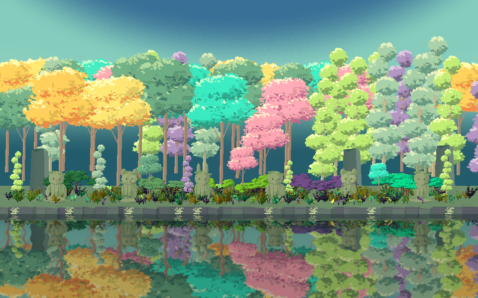
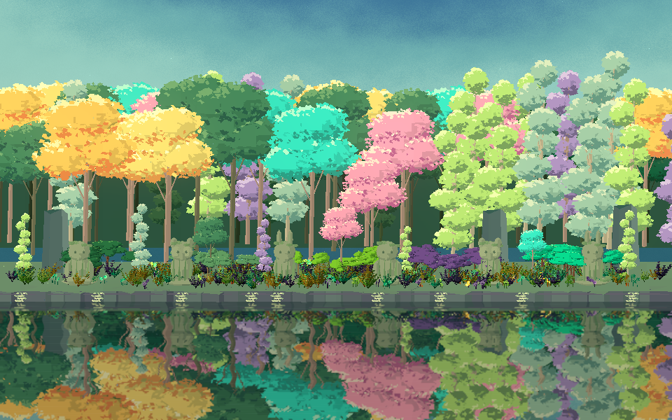
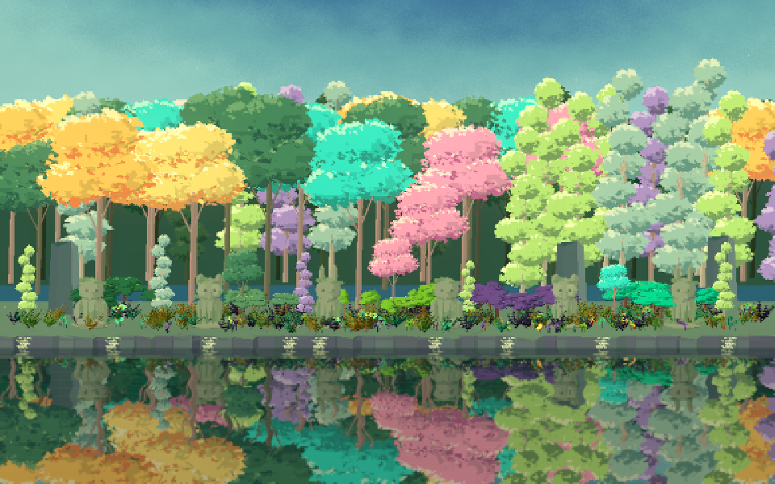

Tracefolio REPORTS & ISSUES
Tracefolio REPORTS & ISSUESWoodland 숲 후경과 하늘 디테일 개선
완료줄기 뒤 빈틈을 짙은 초록 숲으로 채우고, 하늘의 대칭 곡선을 불규칙한 색 띠와 입자 경계로 바꿨습니다.
작업 결과
원본의 중요한 차이는 밝은 전경 뒤를 막는 어두운 숲 내부와, 불규칙하게 풀린 하늘의 색 경계였습니다. 두 Woodland 씬에 후경 나무27그루·3겹 실루엣과 짙은 녹색 수관을 적용했습니다. 하늘은 비대칭 곡선·넓은 민트 경계·다층 노이즈로 조정했습니다. 실제 Built-in Linear 렌더를 전후로 확인했습니다.
| 비교 항목 | 사용자 원본에서 관찰 | 수정 전 | 이번 반영 |
|---|---|---|---|
| 줄기 뒤 공간 | 짙은 초록 숲이 하늘을 가림 | 밝은 청록 하늘이 비침 | 3겹 불투명 숲 실루엣과 후경 수목 |
| 수관 대비 | 밝은 나무 사이 짙은 녹색 수목 | 밝은 색 위주 | 기존 Forest 수관을 어둡게, 후경3종 추가 |
| 하늘 색 띠 | 넓고 비대칭이며 경계가 흐트러짐 | 대칭적이고 균일한 곡선 | 중심을 비튼 곡선과 넓은 민트 경계 |
| 하늘 표면 | 크기가 다른 반점·입자감 | 균일한 미세 입자 | 큰 노이즈·세부 노이즈·입자 경계 혼합 |


변경 내용
적용 내용
- 기존 Models/PrismaticWoodland 분류에504삼각형의 편집 가능한 ForestInterior 메시를 추가했습니다. 서로 다른 높이·깊이의 불규칙한 숲 실루엣3겹입니다. 하늘 색을 검게 칠해 대신한 것이 아니라 실제 불투명 메시입니다.
- 기존 메시를 공유하는 DeepForest·DeepJade·DeepMist 프로필로 각 씬에27그루를 추가했습니다. 총75그루이며 기존48그루는 유지합니다. 전경 Forest 프로필의 색도 짙게 조정했습니다.
- 하늘의 곡선 중심을 비틀고 넓은 민트색 경계·3주파수 노이즈·입자로 색 경계를 풀었습니다. 새로운 이미지 텍스처를 만들거나 외부 에셋을 수정하지 않았습니다.
- 샘플 메타데이터·영문 장면 문서·9언어 가이드에 새 후경과 비용 제한을 반영했습니다.
검증
- Unity6000.0.83f1 Built-in Linear,960×600, 기존 카메라와 동일 바람 시간. 일반 식생·Pixel Camera 통합 두 씬 실제 렌더를 확인했습니다. Native shader errors0.
- 기존 씬 직렬화 블록422개/423개와 카메라 값을 보존하고 각 씬에28오브젝트(나무27+숲 내부1)를 추가했습니다. 새 메시504삼각형·모델 총38개를 실제 메타데이터와 대조했습니다.
- 실제 Unity 헤더를 사용한 D3DCompile16엔트리 통과. 기존 공통 함수의 uninitialized-variable 경고는 보존되며 오류는 없습니다. 기존 에셋 검사에서 새 모델로38≠37이 검출된 실패를 기록한 뒤 누락된 모델 목록을 갱신하고12검사를 재통과했습니다.
- 작업용 Unity는 Native dirtyBefore=false·dirtyAfter=false를 확인하고 정상 종료했습니다. 해당 PID 종료를 재조회했으며 기존 사용자 앱을 종료하지 않았습니다.


실제 Unity 출력 PNG를 편집 없이 보존했습니다. 픽셀과 명암 근거 보존을 위해 일부 파일은200KB 목표를 초과합니다. 사용자 원본 이미지는 공개 보고서에 재배포하지 않고 직접 관찰한 차이만 기록했습니다.
남은 사항
원본의 나무 형태·배치·볼류메트릭 조명까지 일치시킨 것은 아닙니다. 추가 나무는 렌더 비용을 늘리며 프레임 성능을 측정하지 않았습니다. 물·블룸의 URP 지원과 다른 플랫폼은 이번 검증 범위가 아닙니다. 검토 패키지 재출력은 하지 않았습니다.
교훈 검토: 색감만이 아니라 전경·후경의 차폐와 하늘 경계의 규칙성까지 원본과 대조했습니다. 기존 실제 비교·원본 보존·정리 지침을 적용했으며 추가 전역 규칙은 만들지 않았습니다.
작업 시간
- 제안 시간: 15~20분
- 실제로 완료된 시간: 2026-11-04 16:14:41 KST 시작 · 16:22:25 KST 구현·Native 검사·정리 확인. 공개 배포 확인 시각은 최종 채팅에 기록.
- XERJ: 실패 — Xerj.ps1 Status에서 node is not running 확인. 직전 Search의 node.lock 점유 실패 근거를 유지하고 rg·현재 소스·실제 Unity 렌더로 대조했습니다.